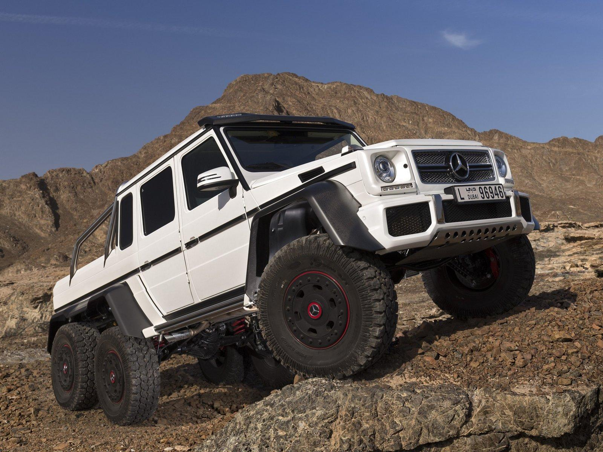

Mercedes-AMG ortaklığının sınırlı şaheserlerinden birisi olan G63 AMG 6×6, piyasaya çıktığı ilk günden itibaren arazi deneyimini yeniden boyutlandırdı. Son rakiplerinden birisi olan Hennessey Raptor 6×6 dahil olmak üzere diğer pek çok üreticiye de esin kaynağı olan bu canavar, bir anlamda kullanıcısını istediği yere götürecek “medenileştirilmiş” bir araç olarak da nitelendirildi. İlk üretim projesi aşamasında askeri kullanım için planlansa da ardından sokaklara çıkabilecek versiyonuna dönülen araç Mercedes tarihinin en pahalı ve en büyük birkaç modelinden bir tanesi. Evet, bu kadar kağıt üstü bilgi yeter diyorsanız şimdi de işin eğlenceli kısmına geçebiliriz! Bu sitede ve bağlantılı sayfalarında yer alan içerikler; tamamen veya kısmen LOG’un yazılı izni olmadıkça kaynak gösterilerek veya alıntı yapılarak dahi kullanılamaz, çoğaltılamaz ve değiştirilemez.
Bu zamana kadar pek çok yerde zorlu koşullarda karşımıza çıkan G63 AMG 6×6’nın üstesinden gelmesi gereken son görevi yoğun bir kar zeminle gerçekleşti. Instagram üzerinden Gregb.23 isimli kullanıcının paylaştığı videoda kar üzerinde gerçekleştirdiği oyunla başarılı bir performans sergileyen bu canavarın en büyük yardımcılarından birisi de şüphesiz elektronik olarak kontrol edilebilen lastik basınç teknolojisi. Kaputunun altında kullanılan 5.5 litrelik V8 motoruyla 536 beygir güce ve 760 Nm tork değerine sahip olan G63 AMG 6×6, tork iletim teknolojisi ve beş diferansiyel kilidiyle de videodaki performansın kapılarını aralıyor. 4.105 kilogramlık ağırlığı bulunan aracın üzerinde 18 inçlik jantların ve 37 inçlik lastiklerin kullanıldığını da hatırlatmakta fayda var. Bu sitede ve bağlantılı sayfalarında yer alan içerikler; tamamen veya kısmen LOG’un yazılı izni olmadıkça kaynak gösterilerek veya alıntı yapılarak dahi kullanılamaz, çoğaltılamaz ve değiştirilemez.
